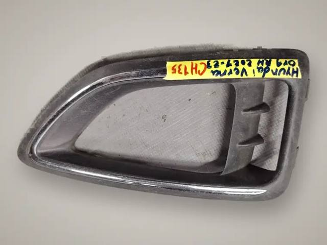

Piezas de carrocería para Hyundai Verna
16 piezas disponibles hoy para Hyundai Verna, cada una con su foto y su código: defensas delanteras (3), covers de halógena (2), faros y lámparas delanteras (2), tapas superiores de radiador (2). Dinos el año de tu carro y te confirmamos si le sirve.
- Garantía de 3 días
- Foto real de cada pieza
- Efectivo, Yappy o ACH
- Lunes a sábado, 8:00 a. m. a 5:00 p. m.
Defensas delanteras para Hyundai Verna 3
 810Verna
810Verna 811Verna
811VernaCovers de halógena para Hyundai Verna 2

CH135Verna2021-23 · lado derecho · original CH162Verna2019-21 · lado izquierdo · original
CH162Verna2019-21 · lado izquierdo · original LD010Verna
LD010Verna LD057Verna
LD057Verna TA004Verna
TA004Verna PT026Verna
PT026Verna TB002Verna
TB002Verna P017Verna
P017Verna GFT003Verna
GFT003Verna VA030Verna
VA030Verna HA115Verna
HA115Verna